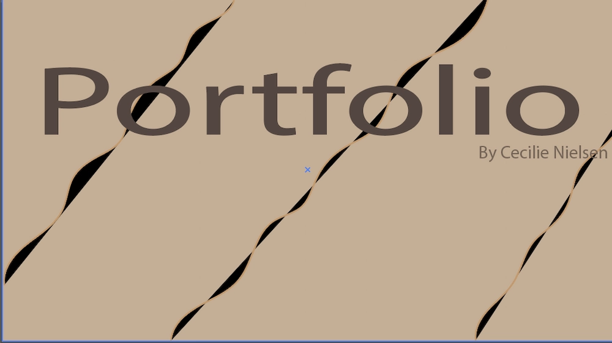
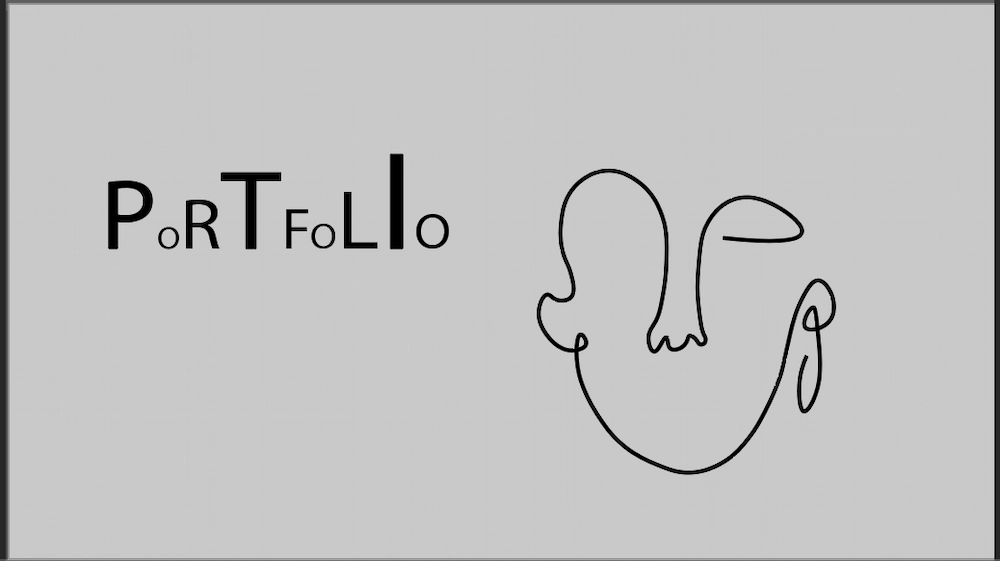

Min portfolio
Processen
Jeg ønskede at få tage lidt af alt vi havde lært med i min portfolio, samtidig med at jeg ønskede et enkelt udtryk. Jeg startede ud med at lege lidt i Adobe Illustrator, med nogle ideer til en forside. Jeg fik lavede to fuldendte eksempler, men endte med den sidste jeg lavede med grå baggrund.


Da jeg ønskede min portfolio meget enkelt, har jeg primært brugt grå og sort, så har jeg tilføjet hvidt få steder som fylder over hele skærmen. Jeg har arbejdet med få grids, men med en masse margin og gap for at få layot til at se flot ud.